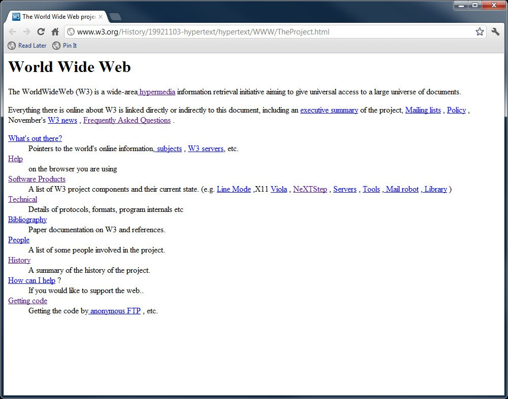
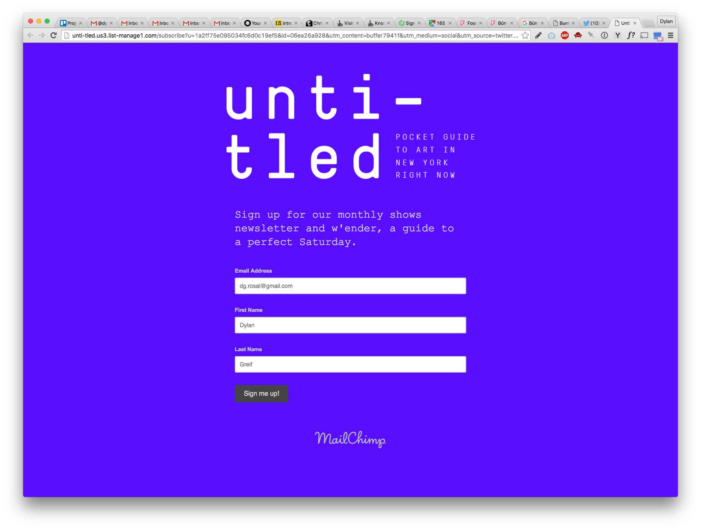

You already know how to construct a basic HTML page, and how to style the HTML elements using CSS. Now, let’s take a look at how different kinds of elements display in a page layout.
Strings of text always appear in an inline flow. That means that every word will appear to the right of the one before it until there is no space left on the line, at which point, the string of text will start again at left side of the line below. Left to right, top to bottom. This is the flow of inline content.
But raw text alone doesn’t make for a great editorial layout. A good layout, like any web page, needs:
This is the first website, made by Tim Berns-Lee.
Subscribe page for “Untitled” newsletter.
This is where elements come into play. Today, we are going to focus on how different elements let us layout an editorial web page in different ways.
An element is like a container you can put content in. While it’s not possible to give raw text different layout structures, styles, and interactive properties, it's possible to do this with elements that contain text. Moreover, elements can also contain embeddable media and even other elements. In html, an element is anything wrapped in an opening and closing tag.
Here are a few examples of elements:
Why would you want to one element inside another element? Many reasons. One is so that you can group elements together, and then design that group in a certain way. This “Deep Dive” box, for example, puts a header element and a paragraph element in a “parent” container. In CSS, the parent container was given a yellow container.
Task 1 Create group of elements contained in a parent element, and attribute a style to the parent element.
When you add inline elements to a page, they will be laid out just like words in a string of text: left-to-right then top-to-bottom.
In this page’s HTML, every word in the sentence below was put inside a <span> (and styled with a green border):
I think therefore I am I think therefore I am I think therefore I am I think therefore I am I think therefore I am I think therefore I am I think therefore I am I think therefore I am I think therefore I am I think therefore I amTask 2 Create a layout comprised of a handful of inline elements.
While you can use CSS to style an inline element’s container in some ways (like adding a green border, for example), you cannot change the container’s width and height or, say, add a top and bottom margin.
The span elements below were assigned no width attributes in CSS. Their widths are defined by the length of the content inside them:
I think thereforeThe span elements below were assigned width attributes of 1000px each in CSS, which is a LOT. The inline element ignores this. Their widths are still defined by the length of the content inside them:
I think thereforeWhen you add block elements to a page, they will stack top-to-bottom. Each element will stretch horizontally to take up its own entire line. Thus, sibling content cannot appear to the left or right of the block element.
In this page’s HTML, every word in the sentence was put inside a <div> (and styled with a green border):
A block element can adopt more “physical” properties. You can use CSS to change the container’s width and height, or, say, add a top and bottom margin.
The first div element below was given no width, so it fills 100% of its parent container, by default. The second was given a 50% width in CSS to fill 50% of its parent container. The third was given a 100px width in CSS.
Note: even when there is enough horizontal room for two block elements to fit side by side, they will still stack one on top of the other.
Task 3 Create a layout comprised of a handful of block elements. Adjust the height and/or width of at least one of them.
In CSS, all you have to do is add the display: block; attribute to what would by default be an inline element, and the display: inline; attribute to what would by default be a block element.
This example shows two div elements, which display as block by default, display inline instead.
This example shows two span elements, which display as inline by default, display block instead.
I am text in a span I am text in a spanTask 4 Create a layout of elements, where at least one inline element was turned into a block element, and vice versa.
You can make an element that behaves like both an inline and block element.
In CSS, all you have to do is add the display: inline-block; attribute to the element. An inline-block element will be built as if it were a block element, but it will flow on the page as if it were an inline element.
This example shows two block elements (with CSS-styled width and margin) positioned on the same line.
This is a brief paragraph about this section.
This is a brief paragraph about this section.
Task 5 Create a layout comprised of inline-block elements.
Say you want to align the content on your page. By default, all content is left-aligned. Beyond that...
To align inline content: you can order its parent container to align all content therin to the left, center, or right.
The example below shows two text sentences. Each sentence is contained in an inline, span element. Both span elements are contained in a parent div element. I gave the parent div the style attribute of text-align: center;. This centers all inline elements in the parent.
Task 6 Create a layout comprised inline content that is centered in its container.
To align block content: you can order the element itself how it aught to align itself on the page. Commonly, people want to center a block element. This can be done by setting its left and right margin to "auto" (e.g. margin-left: auto; margin-right: auto;)
The example below shows one sentence. The sentence is contained in a block, div element. (Because it is a block element, I could set a width and height for it). I gave it the style attribute of margin-left: auto; margin-right: auto;. As a result, it centers itself in the parent.
What if I wanted to the raw text inside the divto be text-aligned center? In this case, you can think of the div as a parent element for the inline text content. I gave the parent div the style attribute of text-align: center;. Now, the div is both centering itself in its parent, and it is centering all inline text inside it.
Task 7 Create a layout comprised a block element that is centered in its container.
There is another way to align block and inline elements to the left or right. You can give the element the style attribute of float: left or float: right. This aligns it to the left or right side of its parent element. Giving an element the float attribute also does a couple other things:
Here's that earlier example, where every word in the sentence below was put inside a <span>, an inline element. Only this time, I made one of the elements green:
I think therefore I am I think therefore I am I think therefore I am I think therefore I am I think therefore I am I think therefore I am I think therefore I am I think therefore I am I think therefore I am I think therefore I amNow, let’s give that green <span> a <float: right;> style attribute. When it forces itself to the right, other inline elements flow around it:
I think therefore I am I think therefore I am I think therefore I am I think therefore I am I think therefore I am I think therefore I am I think therefore I am I think therefore I am I think therefore I am I think therefore I amNow, a <float: left;> style attribute:
I think therefore I am I think therefore I am I think therefore I am I think therefore I am I think therefore I am I think therefore I am I think therefore I am I think therefore I am I think therefore I am I think therefore I amTask 8 Create a layout comprised an element floating amid other inline elements.
Now below is every word in the sentence put inside a <div>, which is a block element. (By default, block elements have 100% widths.) Again, I made one of the elements green:
Let us float that green element to the right. Let's increase its height, too. When it forces itself to the right, other block elements overlap behind it:
Task 9 Create a layout comprised an element floating amid block elements.
Task 10 Assemble all your tasks in one web page with a page title and subtitle that describes what this page is. Every example should have a heading that indicates what it is in example of.